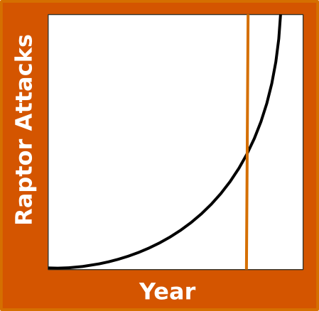

Velociraptor Awareness Day
April 18th
Know your Velociraptor

Velociraptors, commonly just called raptors, are a breed of dinosaur that were once extinct.
Thanks to the miracles of modern science and a desire to make the worlds deadliest petting zoo, we have brought them back.
By using the latest techniques in cloning and genetic engineering once again these predators roam the earth.
Every year, hundreds of deaths are attributed to velociraptor attacks.
Today was founded on the need to inform the public about these attacks and how to be prepared for them.
By reading through this information you will be prepared for an attack when it happens.
Even know top scientist and military officials are working on removing the raptor menace from our shores.
You can help do your part in our ongoing research and efforts to undo what we have done.
Where Raptor Attacks Occur
Raptors are clever, and will wait until you are least prepared to deal with them to attack.
- The Park
- The Office
- The Car
Be sure to stop look and listen. See what's going on around you.
Raptors like to distract their prey, so even if you see one, make sure you know other possible blind spots that may contain more raptors.
In the park, the most common scenario is when you are playing a sports activity and the raptor sees already exhausted prey.
Be sure to draw large crowds to your sporting event in order to scare off the raptors.
In the office, the most common scenario is when you are sleeping during a meeting.
Be sure to not sleep during meetings and to check in conference rooms before having a meeting.
In the car, the most common scenario is when you are playing loud music.
Raptors love loud music; and will do anything to get in the car, even if it means going through you.
Fighting Raptors
Raptors are slightly smaller than humans, and fierce fighters.
Unfortunately, common means of dealing with humans are not effective in dealing with raptors.
Be sure to watch out for the 3 T's:
The 3 T's
-
Teeth.
When a raptor comes at you it will often use its teeth to latch onto prey.
This will prevent you from running away.
The best defense against a raptor biting you is your classic pepper spray products.
-
Talons.
Raptor talons are used in order to disect prety with ruthless precision.
Be sure not to grab talons when throwing a raptor and to not allow a raptors back talons to kick you.
The best defense against talons it to where a chainmail underarmor when going out.
-
Tail.
The tail is the mainstay of a raptors opening attack.
Like most animals that have large tails from the Jurassic Period, raptors use their tail to stun their prey.
You can be prepared for the stun but there is little you can do to avoid it.
If you are stunned, do not get up immediately; rather, roll to the side in order to prevent a raptor from jumping ontop of you.
Raptors in Human Society
With raptor attacks becoming more frequent, people are starting to make informed descisions on how to deal with this new situation.
Cults of raptor worship have also begun to show up due to their coming back from extinction.
Figures such as the "Space Pope", "Raptor Jesus", and "Raptor Moses" are often portrayed as innevitable beings that will come during the end of days for those worshipping the cults.
Raptor Society
Raptors are not known for their intellectual intelligence.
Quite often when ontronted with a school, or testing situation raptors will just eat their teacher or proctor.
Hopefully scientist and raptor psychologists will one day learn how to teach raptors.
However, like most things there are exceptions.
The Philosoraptor, is a great philosopher often put on level with Plato or DesCartes.
Her inquisitive nature about real world problems often brings about great debates, such as the greate flamewars of 2012.